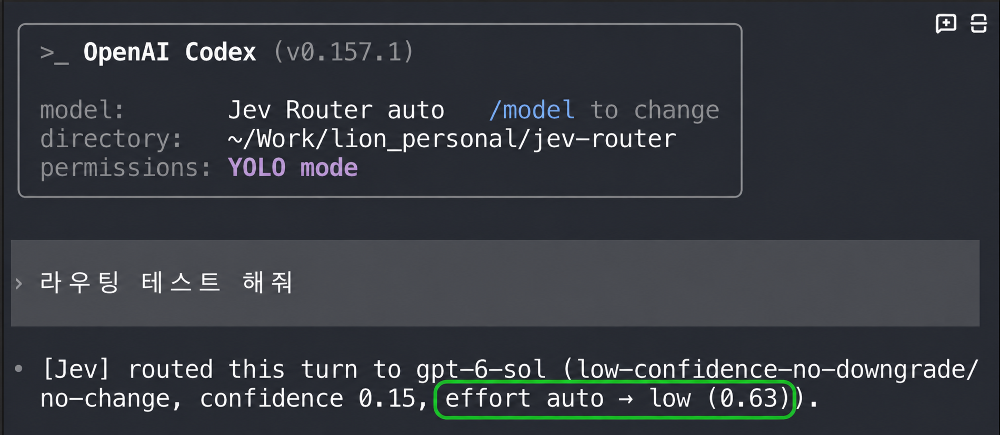
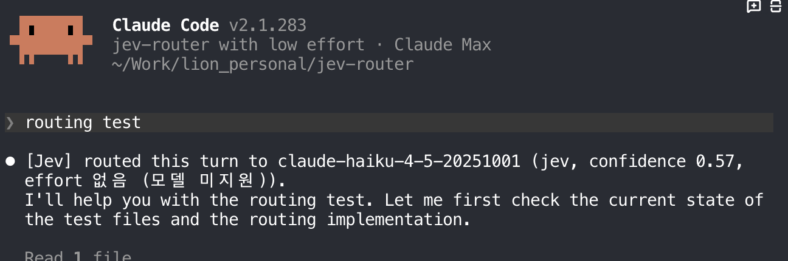

Choose the model. Choose its effort. Keep working.
I built this Jev Router edition so each user turn can select a model and reasoning effort inside the CLI I already use. I had not found this combination in my existing terminal workflow, so I built it and recorded what the CLIs displayed.
Model per turnEffort per turnManual overrideTwo routing decisions, on screen
OpenAI Codex
The decision line reports gpt-6-sol and effort auto → low (0.63). The green outline highlights the effort field. The separate confidence 0.15 belongs to the model-routing decision.

Claude Code
The decision line reports claude-haiku-4-5-20251001 and effort 없음 (모델 미지원): no effort setting for a model that does not support it. This is a model choice with an explicit effort status, not a low-effort setting.

These images demonstrate the displayed decisions. They do not establish a market-first claim, benchmark speed, or measure answer quality. 0.63 is an effort-selection score, not a speedup.
The router goes first
I tried putting a separate AI model ahead of my working AI to clean up requests. In my workflow, that extra pass did not work well. I now let the router make a small decision before the working model handles the original task.
Earlier path
Current path
The router is an extra routing request; it does not eliminate network latency or guarantee a faster response. The diagram shows the change in my workflow, not a timing measurement.
A way to stop guessing which model to pick
Friends who started building software with AI often asked which model to choose for a task. I watched some pick an unsuitable model, get a poor result, and blame the task or the tool. I wanted the CLI to make that choice at the start of each turn. Jev recommends a tier; this project applies policy, checks the models available to the signed-in account, and selects the final model and effort. You can still pick a model yourself.
What changed in daily use
I felt Claude Code run about twice as fast and Codex start responding sooner. I did not notice a quality drop. I have not run a controlled latency, cost, or quality comparison, so treat those as personal impressions rather than performance promises.
I write an INTENT.md and a DIRECTIVE.md for work that needs clear context. With good instructions, a lower-tier model has handled many of my tasks. I still choose a stronger model for complex work when redoing the task would cost more. Manual selection remains available; automation does not take away that judgment.
The router can attempt a decision on each eligible turn. Availability, account catalogs, overrides, and failures affect the outcome. “100% use” means I can leave the router selected through my normal workflow; it does not mean every turn succeeds with the lowest model.
More model choices, within provider rules
I want to add more eligible models, including GLM, and explore support for Antigravity. I am weighing a terminal integration against building a dedicated terminal. The near-term goal is to let this router choose among more models without disrupting the existing CLI workflow.
API access and personal-account OAuth can carry different provider terms. I will check each provider's rules before implementing account-based routing. This is a direction, not a shipping promise.
Setup and technical details →모델도, 추론 노력도 매 턴 고른다.
제가 쓰는 CLI 안에서 매 턴 모델과 추론 노력(effort)을 함께 고르려고 이 Jev Router 버전을 만들었습니다. 기존 터미널 작업 방식에서 이 조합을 찾지 못해 직접 구현하고 화면에 나온 결과를 기록했습니다.
매 턴 모델 선택매 턴 effort 선택수동 선택 가능Codex와 Claude Code의 라우팅 결과
OpenAI Codex
결정 문구에 gpt-6-sol과 effort auto → low (0.63)가 나옵니다. 초록색 테두리는 effort 부분을 가리킵니다. 별도의 confidence 0.15는 모델 라우팅 판단의 신뢰도입니다.
Claude Code
결정 문구에 claude-haiku-4-5-20251001과 effort 없음 (모델 미지원)이 나옵니다. 이 모델은 effort 설정을 지원하지 않으므로, 이 화면은 low effort로 설정했다는 뜻이 아닙니다.
두 화면은 표시된 선택 결과의 증거입니다. 시장 최초, 속도 향상, 답변 품질의 증거는 아닙니다. 0.63은 effort 선택 점수이며 속도 수치가 아닙니다.
라우터를 맨 앞에 놓았습니다
예전에는 AI로 요청을 한 번 정제한 뒤 작업할 AI에 넘겼습니다. 제 작업에서는 이 앞단 처리가 잘 맞지 않았습니다. 지금은 라우터가 먼저 작은 선택을 하고, 작업 모델에는 원래 요청을 보냅니다.
이전 방식
현재 방식
라우터 호출 자체에도 시간이 듭니다. 이 그림은 처리 시간 측정 결과가 아니라 제 작업 방식의 변화입니다.
모델 선택을 매번 고민하지 않도록
주변에서 바이브 코딩을 시작한 지인들은 어떤 모델을 골라야 하는지 자주 물었습니다. 작업에 맞지 않는 모델을 골라 원하는 결과를 얻지 못하는 경우도 봤습니다. 그래서 CLI가 매 턴 선택을 돕게 했습니다. Jev가 모델 등급을 추천하면 이 프로젝트가 정책과 로그인 계정의 모델 목록을 확인해 최종 모델과 effort를 고릅니다. 사용자는 직접 모델을 고를 수도 있습니다.
일하면서 느낀 변화
제게는 Claude Code가 대략 두 배 빠르게 느껴졌고, Codex는 답변이 더 빨리 시작됐습니다. 답변 품질이 떨어졌다는 느낌은 없었습니다. 속도·비용·품질을 통제된 조건에서 비교하지 않았으므로 성능 보장으로 받아들이면 안 됩니다.
저는 작업 배경을 적은 INTENT.md와 지시를 적은 DIRECTIVE.md를 자주 만듭니다. 지시가 명확하면 낮은 등급의 모델로도 많은 일을 처리했습니다. 두 번 일할 가능성이 큰 복잡한 과제에는 일부러 상위 모델을 고릅니다. 수동 선택을 남긴 이유입니다.
일상 작업에서 라우터를 계속 선택해 둘 수 있지만, 계정의 모델 목록, 수동 지정, 오류 상황에 따라 매 턴 결과가 달라집니다. 모든 작업을 가장 낮은 모델로 처리한다는 뜻은 아닙니다.
제공사 정책을 확인하며 모델 늘리기
GLM을 비롯한 모델을 더 추가하고 Antigravity 지원도 검토하고 싶습니다. 기존 터미널에 연동할지, 별도 터미널을 만들지도 고민 중입니다. 당장은 지금 쓰는 CLI 흐름을 유지하며 선택 가능한 모델을 늘리는 데 집중하려 합니다.
API 사용과 개인 계정 OAuth 연동에는 제공사별로 다른 정책이 적용될 수 있습니다. 계정 기반 라우팅을 구현하기 전에 각 제공사의 조건을 확인해야 합니다. 아직 확정된 출시 계획은 아닙니다.
설치 및 기술 설명 →